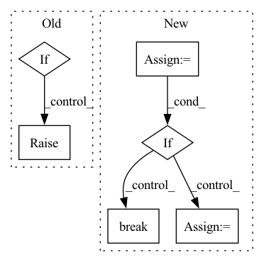

Pattern ID :34066
Before Change
self._send_pm_cmd(command)
rsps = self._get_pm_resp()
for rsp in rsps:
if not enum_equal(rsp, MGMT_RESPONSE.PAUSED):
raise ValueError(f"Wrong Response Received : {rsp}")
// Inform the runtime about successful pausing
self.service_to_runtime.send(MGMT_RESPONSE.PAUSED)
breakAfter Change
// TODO: Do we actualy need to wait for PMs to be in
// HOST or MGMT phase to stop or pause them?
if self.runtime_to_service.probe():
cmd = self.runtime_to_service.peek()
if enum_equal(cmd, MGMT_COMMAND.STOP):
self.runtime_to_service.recv()
self._handle_stop()
return
if enum_equal(cmd, MGMT_COMMAND.PAUSE):
self.runtime_to_service.recv()
self._handle_pause()
self.paused = True
break
// If HOST phase (last time step ended) break the loop
if enum_equal(
phase, LoihiPyRuntimeService.Phase.HOST):In pattern: SUPERPATTERN
Frequency: 4
Non-data size: 6
Instances Fragment ID: 97417614
Project Name: lava-nc/lava
Commit Name: 4956db0191ef2d0b51c026fb9c1bb50ea57e6c90
Time: 2022-02-17
Author: yashwardhan.singh@intel.com
File Name: src/lava/magma/runtime/runtime_service.py
M Class Name: LoihiPyRuntimeService
N Class Name: LoihiPyRuntimeService
M Method Name: run(1)
N Method Name: run(1)
M Parent Class: PyRuntimeService
N Parent Class: PyRuntimeService
M File Name: src/lava/magma/runtime/runtime_service.py
N File Name: src/lava/magma/runtime/runtime_service.py
M Start Line: 207
M End Line: 266
N Start Line: 296
N End Line: 360
Before Change
def delete_project(args: Namespace) -> None:
sess = setup_session(args)
(w, p) = project_by_name(sess, args.workspace_name, args.project_name)
if p.numExperiments > 0:
raise errors.ForbiddenException(
authentication.must_cli_auth().get_session_user(),
"Projects with associated experiments currently cannot be deleted. "
"Use archive to hide projects.",After Change
"For a recoverable alternative, see the "archive" command. Do you still \n"
"wish to proceed?"
):
resp = bindings.delete_DeleteProject(sess, id=p.id)
if resp.completed:
print(f"Successfully deleted project {args.project_name}.")
else:
print(f"Started deletion of project {args.project_name}...")
while True:
sleep(2)
try:
p = bindings.get_GetProject(sess, id=p.id).project
if p.state == bindings.v1WorkspaceState.WORKSPACE_STATE_DELETE_FAILED:
raise errors.DeleteFailedException(p.errorMessage)
elif p.state == bindings.v1WorkspaceState.WORKSPACE_STATE_DELETING:
print(f"Remaining experiment count: {p.numExperiments}")
except errors.NotFoundException:
print("Project deleted successfully.")
break
else:
print("Aborting project deletion.")
Fragment ID: 97417594
Project Name: determined-ai/determined
Commit Name: cde91c8e90d3897339b53c140c7ef1ddd365d61a
Time: 2022-08-16
Author: nick.doiron@hpe.com
File Name: harness/determined/cli/project.py
M Class Name: AnonimousClass
N Class Name: AnonimousClass
M Method Name: delete_project(1)
N Method Name: delete_project(1)
M Parent Class:
N Parent Class:
M File Name: harness/determined/cli/project.py
N File Name: harness/determined/cli/project.py
M Start Line: 135
M End Line: 150
N Start Line: 136
N End Line: 160
Before Change
def delete_workspace(args: Namespace) -> None:
sess = setup_session(args)
w = workspace_by_name(sess, args.workspace_name)
if w.numExperiments > 0:
raise errors.ForbiddenException(
authentication.must_cli_auth().get_session_user(),
"Workspaces with associated experiments currently cannot be deleted. "
"Use archive to hide workspaces.",After Change
"For a recoverable alternative, see the "archive" command. Do you still \n"
"wish to proceed?"
):
resp = bindings.delete_DeleteWorkspace(sess, id=w.id)
if resp.completed:
print(f"Successfully deleted workspace {args.workspace_name}.")
else:
print(f"Started deletion of workspace {args.workspace_name}...")
while True:
sleep(2)
try:
w = bindings.get_GetWorkspace(sess, id=w.id).workspace
if w.state == bindings.v1WorkspaceState.WORKSPACE_STATE_DELETE_FAILED:
raise errors.DeleteFailedException(w.errorMessage)
elif w.state == bindings.v1WorkspaceState.WORKSPACE_STATE_DELETING:
print(f"Remaining project count: {w.numProjects}")
except errors.NotFoundException:
print("Workspace deleted successfully.")
break
else:
print("Aborting workspace deletion.")
Fragment ID: 97417610
Project Name: determined-ai/determined
Commit Name: cde91c8e90d3897339b53c140c7ef1ddd365d61a
Time: 2022-08-16
Author: nick.doiron@hpe.com
File Name: harness/determined/cli/workspace.py
M Class Name: AnonimousClass
N Class Name: AnonimousClass
M Method Name: delete_workspace(1)
N Method Name: delete_workspace(1)
M Parent Class:
N Parent Class:
M File Name: harness/determined/cli/workspace.py
N File Name: harness/determined/cli/workspace.py
M Start Line: 129
M End Line: 144
N Start Line: 130
N End Line: 154
Before Change
else:
add_fields.append(field_name)
if not expand_schema and add_fields:
raise ValueError(
"%s fields %s do not exist" % (cls._doc_name(), add_fields)
)
After Change
updated_docs.values()
)
else:
docs = parent_docs
for k in keys:
for f in docs:
if k == f.name:
field = f
docs = field.fields
break
field.fields = list(updated_docs.values())
dataset_field_docs.save()
Fragment ID: 97417640
Project Name: voxel51/fiftyone
Commit Name: e9fbeb57e709499a6d69bd4c54fa77e5e8b1a852
Time: 2022-04-04
Author: ben@voxel51.com
File Name: fiftyone/core/odm/mixins.py
M Class Name: DatasetMixin
N Class Name: DatasetMixin
M Method Name: merge_field_schema(4)
N Method Name: merge_field_schema(4)
M Parent Class: object
N Parent Class: object
M File Name: fiftyone/core/odm/mixins.py
N File Name: fiftyone/core/odm/mixins.py
M Start Line: 278
M End Line: 320
N Start Line: 280
N End Line: 327